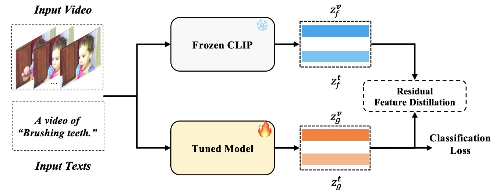
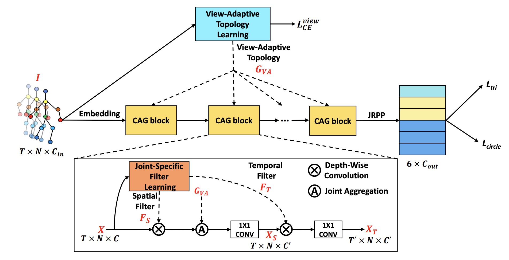
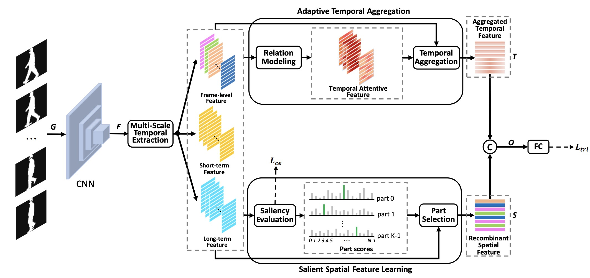

News
- 2025 Papers accepted to NeurIPS 2025, CVPR 2025, ACL 2025, and IJCV 2025.
- 2024 Papers accepted to ICLR 2024, Pattern Recognition 2024, and CVPR Workshop 2024.
- 2023 Papers accepted to ICLR 2023 and IEEE TIP 2023.
- 2022 Paper accepted to IEEE TBIOM 2022.
- 2021 Paper accepted to ICCV 2021.
Experience
Research Intern, TikTok
Video-Audio Joint Generation
2025 - Now
Research Intern, Baidu Inc
Multimodal Video Understanding
2022 - 2025
Research Interest
Research: Video-centric Computer Vision (Generation, Understanding, Recognition).
Publications

JoVA: Unified Multimodal Learning for Joint Video-Audio Generation
arXiv preprint (2512.13677), 2025
A unified framework for generating synchronized video and audio through multimodal learning.

MLLMs Need 3D-Aware Representation Supervision for Scene Understanding
NeurIPS 2025
Proposing 3D-aware representation supervision to enhance scene understanding capabilities in MLLMs.

PruneVid: Visual Token Pruning for Efficient Video Large Language Models
ACL 2025
An efficient visual token pruning method to accelerate Video Large Language Models without sacrificing performance.

Change3D: Revisiting Change Detection and Captioning from A Video Modeling Perspective
CVPR 2025 Highlight
Revisiting change detection and captioning tasks through the lens of video modeling techniques.

Skim then Focus: Integrating Contextual and Fine-grained Views for Repetitive Action Counting
IJCV 2025
A coarse-to-fine framework integrating contextual and fine-grained views for accurate repetitive action counting.

FROSTER: Frozen CLIP Is A Strong Teacher for Open-Vocabulary Action Recognition
ICLR 2024
Leveraging frozen CLIP models as effective teachers to improve open-vocabulary action recognition.

What's in a Name? Beyond Class Indices for Image Recognition
CVPR 2024 Workshop Spotlight
Investigating the semantic impact of using class names versus indices in image recognition tasks.

Graph Contrastive Learning for Skeleton-based Action Recognition
ICLR 2023
A graph contrastive learning framework designed to learn robust representations for skeleton-based action recognition.

Condition-Adaptive Graph Convolution Learning for Skeleton-Based Gait Recognition
IEEE TIP 2023
A condition-adaptive graph convolution network for robust gait recognition under complex environmental variations.

Context-sensitive temporal feature learning for gait recognition
ICCV 2021
Learning context-sensitive temporal features to significantly improve the robustness of gait recognition.